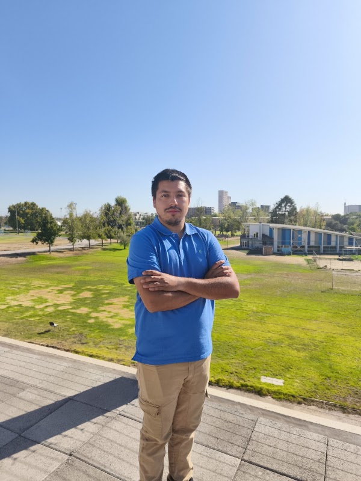
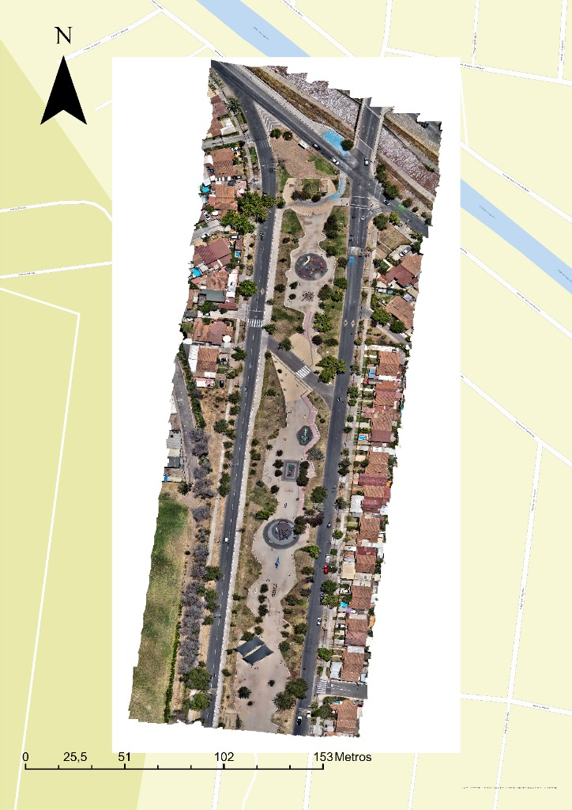
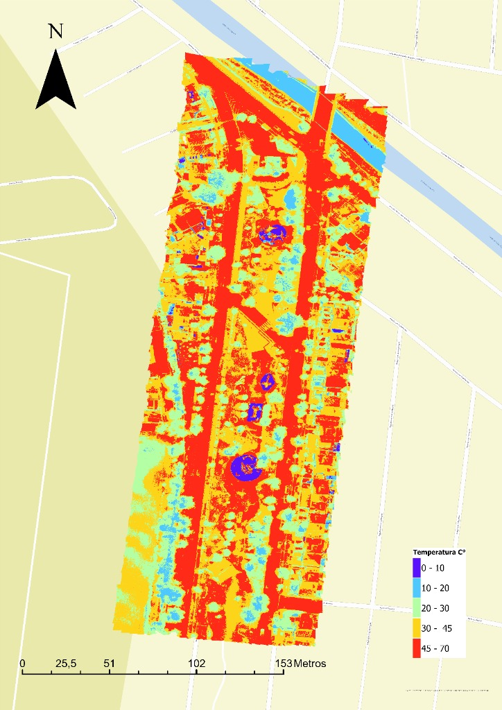
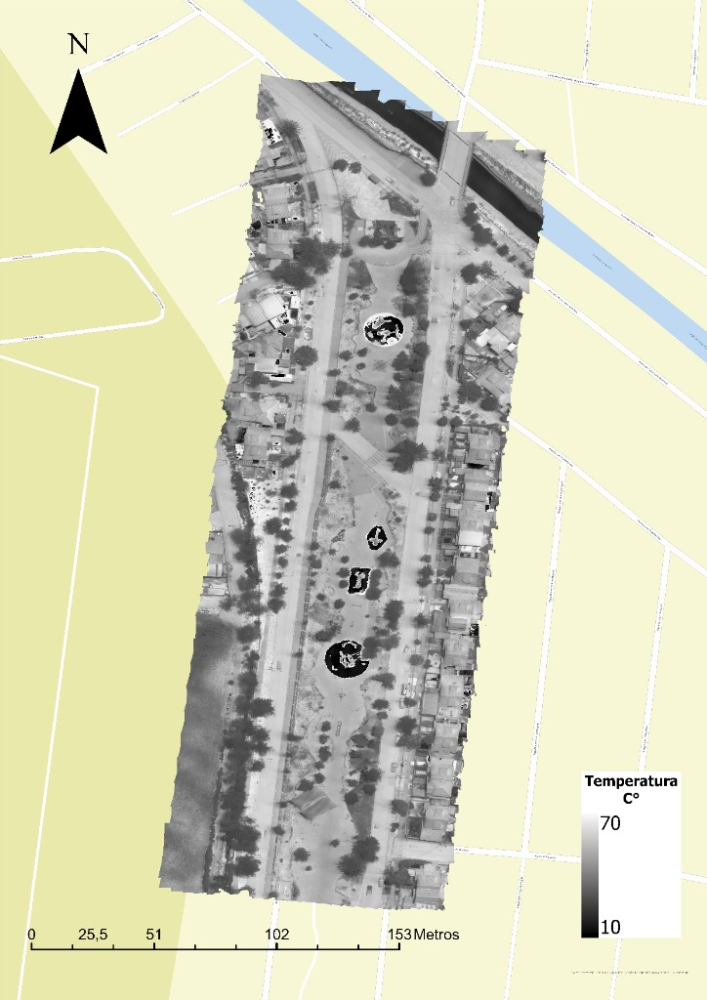

Disponible para Levantamientos & Asesorías Técnicas

André Hernán Vargas Peña
Constructor Civil · Geomensura, Fotogrametría & Aseguramiento de Calidad (QA/QC)
La Florida, Región Metropolitana, Chile
Resumen Profesional
Constructor Civil especializado en geomensura, fotogrametría y aseguramiento de calidad (QA/QC). Experiencia técnica en la ejecución de levantamientos aerofotogramétricos mediante tecnología RPA, procesamiento de datos espaciales y configuración de equipos de medición GNSS RTK.
Trayectoria operativa en el control de calidad, calibración de sistemas de adquisición de datos y validación de metodologías de medición en terreno. Capacidad para automatizar flujos de trabajo y procesar datos mediante Python y Google Apps Script, optimizando el análisis de información geoespacial. Enfoque riguroso y analítico para la gestión de proyectos orientados a la planificación territorial y captura de datos de precisión.
Compilado de Levantamientos Fotogramétricos
Registro de campañas de vuelo, misiones técnicas de emergencia e investigación geoespacial.
09/2024 — 05/2025
Levantamientos Aerofotogramétricos y Termográficos · Proyecto FONDEF ID23I10318
I+D · Publicación DOI
Planificación y ejecución de misiones de vuelo multitemporales para captura de datos térmicos y fotogramétricos de alta resolución en zonas urbanas, orientados a la evaluación microclimática e islas de calor.
Tecnología:RPA con sensor termográfico y óptico (DJI Mavic 3 Thermal)
Ubicación:Santiago, Chile
Software:Agisoft Metashape, ArcGIS Pro, Python
Entregables:Ortofotos térmicas calibradas, Modelos de Elevación (DEM), Análisis Espacial
🌡️ Análisis Termográfico y Fotogramétrico (Haz clic para inspeccionar con Zoom):

🔍 Inspeccionar (Zoom)
1. Ortomosaico Visible RGB
Alta Resolución Óptica · RPA

🔍 Inspeccionar (Zoom)
2. Clasificación Térmica (°C)
Rangos 0°C a 70°C · ArcGIS Pro

🔍 Inspeccionar (Zoom)
3. Radiometría Térmica (10-70°C)
Sensor Infrarrojo · Mavic 3T
Ortofotos Térmicas CalibradasModelos Digitales de Elevación (DEM)Análisis de Infraestructura VerdeDOI: 10.7764/978-956-425-393-0 ↗
08/2026
Inspección Técnica y Levantamiento Aéreo Post-Sismo
Misión Internacional
Misión de apoyo técnico y levantamientos aerofotogramétricos con RPA en zonas urbanas e infraestructuras críticas afectadas por el terremoto de junio de 2026 para diagnóstico de daños y soporte a la evaluación estructural.
Ubicación:Caraballeda y Catia La Mar, La Guaira, Venezuela
Objetivo:Evaluación rápida de daños, mapeo de colapsos y análisis estructural
Equipamiento:Drones RPA Serie Mavic
Procesamiento:Fotogrametría digital rápida, ortomosaicos y nubes de puntos 3D
🗺️ Visor SIG Interactivo (Ortomosaico Post-Sismo · Sector Caraballeda):
Levantamiento Topográfico & Trazado para Proyecto APR Hualcapo
Puentes UC · Municipalidad
Levantamiento planialtimétrico en terreno para la planificación, diseño de trazados y ubicación de obras hidráulicas del sistema de Agua Potable Rural (APR) en el sector de Hualcapo, comuna de Hijuelas.
Ubicación:Hualcapo, Hijuelas, Región de Valparaíso
Coordinación:Centro Puentes UC & Ilustre Municipalidad de Hijuelas
Equipamiento:Receptores GNSS RTK, Drone Serie Mavic
Software:AutoCAD Civil 3D, Agisoft Metashape
🗺️ Visor SIG Interactivo (Trazado y Levantamiento APR Hualcapo):
Modelo Digital de Terreno (MDT)Perfiles Longitudinales de TrazadoCurvas de Nivel de DetalleVer registro en Instagram ↗
02/2024
Levantamientos Fotogramétricos de Sectores Residenciales Afectados por Incendios
Apoyo Municipal · Emergencia 2024
Vuelos aerofotogramétricos con RPA en apoyo técnico a la Municipalidad de Quilpué para el mapeo de alta resolución, catastro de edificaciones siniestradas y evaluación del impacto territorial tras los megaincendios forestales de febrero de 2024 en la Región de Valparaíso.
Ubicación:Sectores Residenciales, Quilpué, Región de Valparaíso
Contraparte:Ilustre Municipalidad de Quilpué
Tecnología:Drones RPA Serie Mavic y Serie Phantom
Software:Agisoft Metashape, AutoCAD Civil 3D
🗺️ Ortofotos por Sectores Residenciales (Haz clic para inspeccionar con Zoom y Paneo):
🔍 Inspeccionar Ortomosaico (Zoom)
Sector Canal Chacao
Alta Resolución (37.8 MB) · Ortofoto RPA
🔍 Inspeccionar Ortomosaico (Zoom)
Sector Población Argentina
Alta Resolución (35.8 MB) · Ortofoto RPA
Ortomosaicos de Alta Resolución Post-IncendioCatastro Fotogramétrico de AfectaciónModelos Digitales de Elevación (DEM)Ver registro en Instagram ↗
* Registro técnico de campañas aerofotogramétricas, misiones de emergencia e investigación científica con respaldo geodésico y radiométrico.
Noticias & Hitos Relevantes
Cobertura, misiones técnicas de impacto y participación en proyectos de relevancia pública e internacional.
Respuesta a Emergencias
Apoyo a la Municipalidad de Quilpué en Levantamientos Fotogramétricos tras Incendios Forestales
Ilustre Municipalidad de Quilpué · Región de Valparaíso
Despliegue operativo de drones RPA para la captura aerofotogramétrica y evaluación técnica de sectores residenciales afectados por los megaincendios de febrero de 2024 en Quilpué, generando ortomosaicos y datos geoespaciales clave para el catastro de daños y planificación de la reconstrucción.
✓ Mapeo aéreo de zonas siniestradas✓ Cartografía de soporte municipal
Apoyo a la Municipalidad de Hijuelas en Levantamiento Topográfico para Proyecto APR Hualcapo
Centro Puentes UC · Ilustre Municipalidad de Hijuelas
Ejecución de levantamientos topográficos y recopilación de datos espaciales en terreno para la planificación y diseño del sistema de Agua Potable Rural (APR) en la localidad de Hualcapo, en estrecha colaboración entre la Municipalidad de Hijuelas y el Centro Puentes UC.
✓ Geomensura y topografía aplicada✓ Impacto social en abastecimiento de agua rural
Delegación Chilena y UC viaja a Venezuela para Apoyar en Evaluación Estructural y Fotogrametría tras Terremotos
Cancillería (Minrel) · Pontificia Universidad Católica de Chile · Cobertura en Medios Nacionales
Misión oficial de apoyo técnico y cooperación de emergencia tras el terremoto de junio de 2026 en Catia La Mar y La Guaira. Participación activa en levantamientos aerofotogramétricos con drones y diagnóstico de infraestructura dañada junto a la delegación de expertos chilenos.
Lanzamiento Oficial de la Guía de Infraestructura Verde Urbana para Mitigación Térmica
Proyecto FONDEF ID23I10318 · ANID / Pontificia Universidad Católica de Chile
Publicación oficial de la "Guía de Diseño de Infraestructura Verde Urbana de baja Altura para Enfriar las Ciudades" (DOI: 10.7764/978-956-425-393-0), integrando vuelos aerofotogramétricos y termografía de precisión para la toma de decisiones en planificación urbana y mitigación de islas de calor.
Aseguramiento de Calidad (QA/QC) e Instrumentación Avanzada en CIPYCS
Centro Interdisciplinario para la Productividad y Construcción Sustentable
Validación de metodologías de medición empírica y despliegue de sistemas de adquisición de datos (DAQ) para control de calidad, ensayos estructurales y monitoreo de variables físicas en proyectos de edificación sustentable e industrializada.
✓ Calibración y DAQ Keysight✓ Protocolos de aseguramiento QA/QC
Publicaciones & Aportes en Investigación
Guía de Diseño de Infraestructura Verde Urbana de baja Altura para Enfriar las Ciudades
2025
Colaboración Técnica en Fotogrametría y Análisis Espacial · Proyecto FONDEF ID23I10318 · ANID / Pontificia Universidad Católica de Chile
Integración de datos aerofotogramétricos y termografía de alta precisión para el diagnóstico de confort térmico y modelado de infraestructura urbana.
Actividades de Investigación de Pregrado Desarrolladas
Proyectos de investigación científica adjudicados y desarrollados en la Escuela de Construcción Civil y la Vicerrectoría de Investigación (VRI) de la Pontificia Universidad Católica de Chile:
IPRE-ECCUC · 100 Horas
Implementación de UAV para la Inspección Avanzada de la Condición Superficial de Estructuras de Pavimento
👨🏫Profesor Guía: Eduardo Rueda Cárdenas · Escuela de Construcción Civil UC
Desarrollo de metodologías de detección y clasificación de patologías viales mediante ~24 misiones de vuelo con UAV (operador con licencia DGAC). Reconstrucción tridimensional densa y ortomosaicos con ContextCapture para diagnóstico del desgaste de la carpeta de rodado y transiciones de pavimento.
24 Misiones UAVContextCapture 3DPatologías VialesCampus San Joaquín
IPRE VRI Invierno · 80 Horas
Determinación de Parámetros Óptimos de Vuelos para Levantamientos en Estructuras Complejas
👨🏫Profesor Guía: José Isaac Lemus Romani · Escuela de Construcción Civil UC
Implementación y evaluación de infraestructura computacional distribuida en red (servidores de alto rendimiento, almacenamiento masivo NAS y estación controladora) para optimización del procesamiento fotogramétrico en ContextCapture y monitoreo de recursos de hardware en tiempo real con HWiNFO.
Planificación y ejecución de campañas de vuelo con sensor termográfico e infrarrojo (DJI Mavic 3T) y sensor RGB de alta resolución. Procesamiento fotogramétrico en Agisoft Metashape y modelado espacial para la publicación de la Guía Oficial de Diseño (DOI: 10.7764/978-956-425-393-0).
Termografía InfrarrojaAgisoft MetashapeArcGIS ProPublicación DOI
Cooperación Científica & Académica
Cooperación en Desarrollo Experimental & Toma de Datos en Terreno (Tesis de Magíster)
Planificación de misiones de vuelo con RPA/UAV, adquisición de datos fotogramétricos de alta resolución y soporte experimental en terreno para tesis de postgrado:
Estructuras PatrimonialesTesis de Magíster
Determinación de procedimientos y condiciones para el uso de Drones en la inspección de estructuras patrimoniales
🏛️
Omar Elías Leiva MontoyaSoporte en desarrollo experimental y vuelos de inspección
Construcción & ObraTesis de Magíster
Uso de UAV (Vehículo Aéreo No Tripulado) en la etapa de construcción
🏗️
Jorge Pinto RodríguezToma de datos aerofotogramétricos y seguimiento en terreno
Infraestructura VialTesis de Magíster
Cuantificación de patologías en pavimento mediante imágenes capturadas por UAV
🛣️
Javiera Galaz QuintanaAdquisición fotogramétrica y resolución de patologías
Geometría de GrietasTesis de Magíster
Cuantificación de dimensiones de patologías tipo grieta en el pavimento
📐
Juliana Andrea Flor LeónCampañas de medición y precisión geométrica en terreno
Experiencia Profesional
Profesional de Obra y Control de Calidad
Constructora MFS
02/2026 — Actual · Lo Barnechea, Chile
Gestión integral de la calidad de ejecución (QA/QC), supervisión técnica en terreno y control estricto de procesos constructivos.
Administración de recursos, coordinación técnica de subcontratos y aseguramiento del cumplimiento de normativas técnicas y especificaciones de proyecto.
Inspección Técnica Post-Sismo
Misión Internacional de Apoyo Técnico · Cancillería (Minrel) & UC
08/2026 · Catia La Mar, La Guaira, Venezuela
Misión internacional de apoyo técnico al Gobierno de Venezuela tras el terremoto de junio de 2026.
Realización de levantamientos fotogramétricos mediante el uso de drones para la evaluación rápida y precisa de zonas afectadas.
Participación activa en análisis estructurales y diagnóstico del estado de edificios afectados por el evento sísmico.
Ingeniero de Proyecto y Asistente Técnico (QA/QC e Instrumentación)
CIPYCS (Centro Interdisciplinario para la Productividad y Construcción Sustentable)
03/2025 — 01/2026 · Santiago, Chile
Diseño, ejecución y validación de metodologías de medición empírica en laboratorio y terreno, asegurando el aseguramiento y control de calidad de datos (QA/QC).
Instalación, calibración y configuración de sistemas de adquisición de datos (DAQ), operando plataformas de instrumentación de precisión como Keysight BenchVue.
Análisis de datos de instrumentación, monitoreo de variables físicas y elaboración de informes técnicos especializados.
Asistente de Investigación (Fotogrametría y Análisis Espacial)
Proyecto FONDEF ID23I10318
09/2024 — 05/2025 · Santiago, Chile
Planificación y ejecución de misiones de vuelo con drones para la captura de datos fotogramétricos y termográficos en terreno.
Procesamiento de ortofotos térmicas y modelos digitales de elevación mediante Agisoft Metashape y análisis espacial en ArcGIS Pro.
Integración de datos geoespaciales para la evaluación de infraestructura verde urbana, resultando en publicación científica indexada.
Competencias Técnicas
🌐 Fotogrametría & Geodesia
Operación RPA (Serie Mavic, Serie Matrice, Serie Mini), Agisoft Metashape, ArcGIS Pro, WebODM, AutoCAD Civil 3D. Operación de receptores GNSS RTK, estaciones totales y conexiones de corrección NTRIP.
📐 QA / QC & Control de Datos
Calibración de instrumentación, validación de datos capturados (Keysight BenchVue), control de calidad de procesos técnicos en terreno y aseguramiento de tolerancias métricas.
💻 Desarrollo & Automatización
Programación en Python para procesamiento y análisis de datos espaciales, automatización de flujos en Google Apps Script, administración y operación en entornos Linux (Kubuntu, Ubuntu).
📡 Comunicaciones Críticas
Operación de radiocomunicaciones VHF y UHF, comunicación satelital, teléfonos satelitales, módems BGAN y enlaces Starlink para operaciones remotas.
Certificaciones & Licencias
🚁
Licencia de Operador RPA (Drones)
Dirección General de Aeronáutica Civil (DGAC Chile)
Habilitación oficial para operaciones aéreas con aeronaves pilotadas a distancia. Vigencia: 01/2028.
📻
Licencia de Radioaficionado (CA3DGZ)
Subsecretaría de Telecomunicaciones (SUBTEL)
Clase Novicio · Indicativo oficial: CA3DGZ. Vigente hasta 25/06/2026.
🚗
Licencia de Conducir
Ministerio de Transportes y Telecomunicaciones
Clase B vigente para traslados y faenas en terreno.